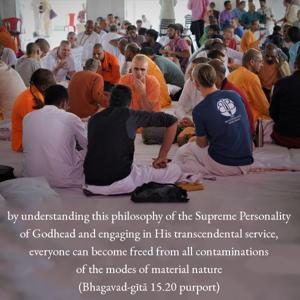
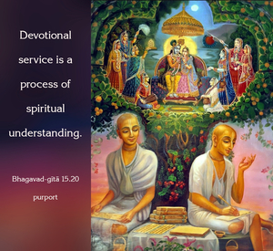
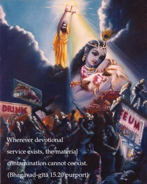

This is the most confidential part of the Vedic scriptures, O sinless one, and it is disclosed now by Me. Whoever understands this will become wise, and his endeavors will know perfection.



The Lord clearly explains here that this is the substance of all revealed scriptures. And one should understand this as it is given by the Supreme Personality of Godhead. Thus one will become intelligent and perfect in transcendental knowledge. In other words, by understanding this philosophy of the Supreme Personality of Godhead and engaging in His transcendental service, everyone can become freed from all contaminations of the modes of material nature. Devotional service is a process of spiritual understanding. Wherever devotional service exists, the material contamination cannot coexist. Devotional service to the Lord and the Lord Himself are one and the same because they are spiritual; devotional service takes place within the internal energy of the Supreme Lord. The Lord is said to be the sun, and ignorance is called darkness. Where the sun is present, there is no question of darkness. Therefore, whenever devotional service is present under the proper guidance of a bona fide spiritual master, there is no question of ignorance.
Everyone must take to this consciousness of Kṛṣṇa and engage in devotional service to become intelligent and purified. Unless one comes to this position of understanding Kṛṣṇa and engages in devotional service, however intelligent he may be in the estimation of some common man, he is not perfectly intelligent.
The word anagha, by which Arjuna is addressed, is significant. Anagha, “O sinless one,” means that unless one is free from all sinful reactions it is very difficult to understand Kṛṣṇa. One has to become free from all contamination, all sinful activities; then he can understand. But devotional service is so pure and potent that once one is engaged in devotional service he automatically comes to the stage of sinlessness.
While one is performing devotional service in the association of pure devotees in full Kṛṣṇa consciousness, there are certain things which require to be vanquished altogether. The most important thing one has to surmount is weakness of the heart. The first falldown is caused by the desire to lord it over material nature. Thus one gives up the transcendental loving service of the Supreme Lord. The second weakness of the heart is that as one increases the propensity to lord it over material nature, he becomes attached to matter and the possession of matter. The problems of material existence are due to these weaknesses of the heart. In this chapter the first five verses describe the process of freeing oneself from these weaknesses of heart, and the rest of the chapter, from the sixth verse through the end, discusses puruṣottama-yoga.